In discussing the evolution and formation of the staff, we saw that the eleven-line Guidonian staff separated into two five-line staves. The remaining line was not discarded as such, but rather served as a connective or “shared” line between the two staves.
This invisible middle line locates the pitch C4 (“Middle C”). On the grand staff this appears as a note one ledger line below the staff in Treble Clef, or a note one ledger line above the staff in Bass Clef.
Figure 2.26 C4 (“Middle C”) on the Grand Staff
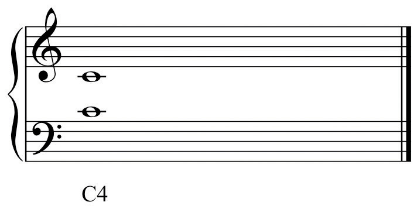From the Guidonian staff a separate clef evolved denoting this particular pitch. This clef is called ‘C-Clef,” or properly, “Moveable C-clefA clef derived from the eleven-line staff. This clef locates C4 regardless of what line of the staff it is placed upon..”
Figure 2.27 C4 C-Clef
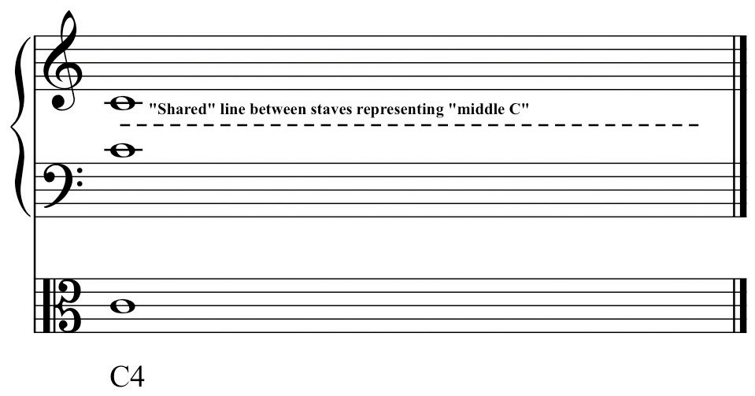This clef may occur on any line in the staff. Regardless of which line it occurs on, it always locates C4, “Middle C.” Originally, the use of this clef was concerned with particular voice ranges. The moveable C-Clef kept the majority of pitches of a given voice within the boundaries of the staff conforming to the typical range of that voice. Hence the common names for this clef as it occurs on each line reflect the associated voice part.
Figure 2.28 C-Clefs by Voice
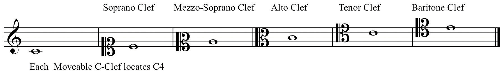The C-Clef on the lowest line of the staff is called Soprano Clef, the second line Mezzo-Soprano Clef, the third line Alto ClefThe C-clef placed on the second line of the staff. Used primarily for Viola., the fourth line Tenor ClefThe C-clef placed on the fourth line of the staff. Used for ‘Cello, Bassoon, and Trombone. and the top line Baritone Clef. Until the 19th Century (approximately) choral music was written in open score, each voice part on a separate staff with the appropriate clef. Gradually this became an arcane procedure.
Two of the Moveable C-Clefs have been retained in common use in instrumental writing, primarily because of the ranges of certain instruments. Alto Clef is predominantly used in writing for the Viola. If Treble or Bass Clefs were used, the Viola part would need to be written with a surfeit of ledger lines-it’s general range occupies the space “between” and “overlapping” Treble and Bass Clefs. The ‘Cello often employs Tenor Clef (in addition to Bass Clef). In orchestral and more advanced wind ensemble literature (but curiously, not in Jazz), Tenor Clef may be used for the upper register of the Trombone. Again, the purpose is to keep the majority of the pitches within the boundaries of the staff.
The remaining C-Clefs are not normally encountered except in autograph scores and facsimile editions of earlier music. There are several other clefs, one of which has become very common, the others rarely seen. In Choral writing, Tenor Clef is commonly replaced by a Treble Clef with an “8” (ottava) sign appended to the bottom of the clef.
As open score became less common, and as fewer musicians were trained to read Tenor Clef efficiently, this “compromise” clef came into general use. It reads exactly as Treble Clef but “sounds” down an octave, conforming to the range of the Tenor voice.
Figure 2.29 Octave Tenor Clef
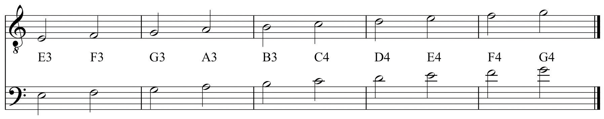Two clefs are no longer in use, French Violin Clef (locating G4) on the lowest line of the staff, and a Bass Clef (F-Clef) located on the middle line of the staff. This is called French Baritone Clef.
Figure 2.30 French Violin and French Baritone Clefs
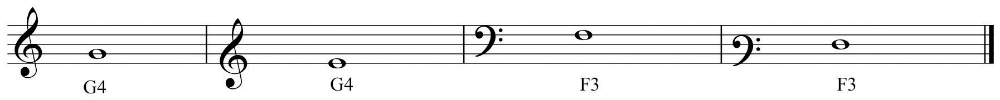The Neutral Clef is used for non-pitched percussion instruments.
Figure 2.31 The Neutral Clef
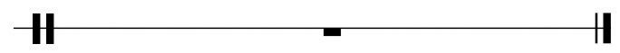Since Alto and Tenor Clefs have been retained in common usage, it is necessary to learn to read these with some facility. When first encountered, this can be a daunting task. Some say that familiarization and memorization is the only method for learning these clefs. There are expedient shortcuts however, that may help to facilitate the process:
For Alto Clef:
Figure 2.32 Alto Clef Shortcut
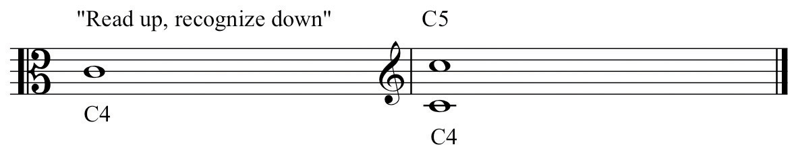For Tenor Clef:
Figure 2.33 Tenor Clef Shortcut
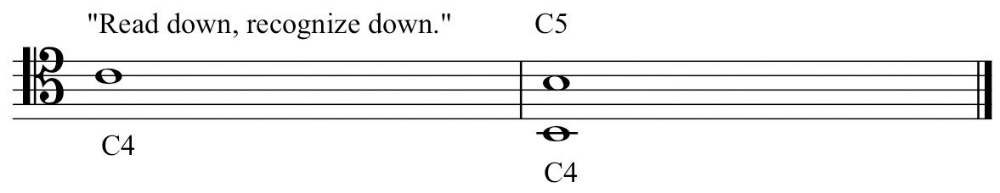On the example provided, practice drawing Alto and Tenor Clefs.
Figure 2.34 Drawing Alto and Tenor Clefs
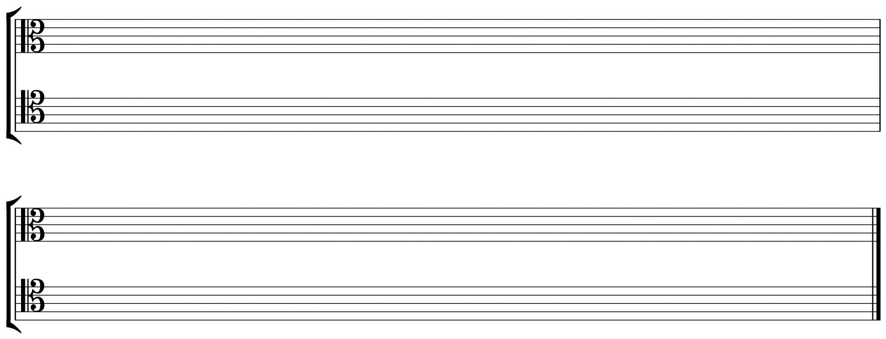For each example in Treble or Bass Clef, re-write in Alto or Tenor Clef as directed. Label pitches by letter name and by register designation.
Figure 2.35 Re-write to Alto and Tenor Clefs
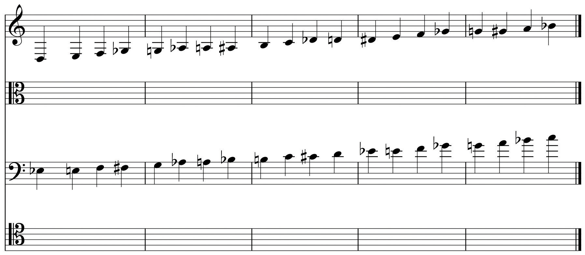Examples of Octave Tenor Clef are given. Re-write these in Tenor Clef.
Figure 2.36 Octave Tenor Clef to Tenor Clef
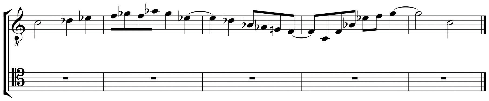